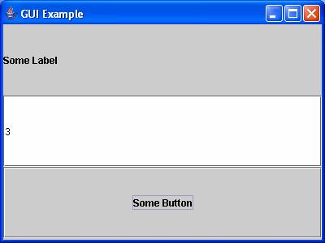
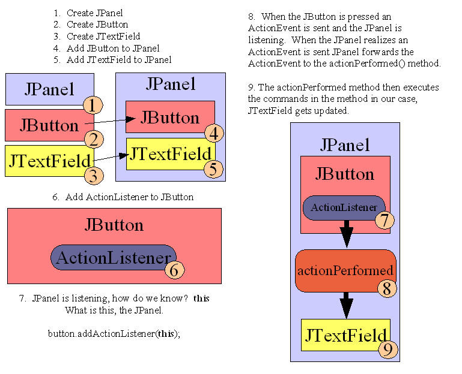
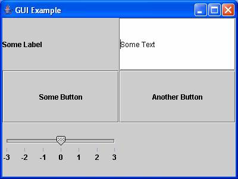

Introduction
to Graphical User Interfaces (GUIs)
We will
learn about the Java
Abstract Window Toolkit (AWT) and Java Foundation Classes
(JFC) / Swing. These classes are the basic essentials of
Graphical User Interfaces (GUI) in the Java programming language.
Java has a package
of predefined classes that
provide GUI functionality called the Abstract Window Toolkit
(AWT). These
classes are called by developers to produce forms, input screens or
output reports. The
AWT is an abstraction layer on top of the Java Virtual Machine (JVM)
and renders the
different types of Widgets (GUI components,
Buttons, Windows, Tables,
etc.) on a screen. AWT is the original GUI toolkit. AWT
components are also known as Heavyweight which rely on the underlying
operating system's windowing system for support. AWT uses peer
classes, e.g. java.awt.peer, that interacts between the components and
operating system.
Java
Foundation Classes (JFC) Swing
The Java Foundation Classes (JFC) / Swing
are GUI classes enabling the developer to write programs independent of
the windowing system or operating system. Swing is the second
major GUI release of Java classes and are built on top of the
AWT. The Swing container components, e.g. JApplet, JDialog,
JFrame, JWindow are also Heavyweight. Look at the JRootPane
class, this will answer all questions between lightweight and
heavyweight. Most of the other Swing
components are Lightweight. LIghtweight components are completely
written in the Java programming language and there is no peer package
in use.
JFrames and JPanels
The JFrame
is a top level window with a title and border including the minimize,
maximize and exit buttons. JFrames are a container for a
computer's screen, enabling a user to move the component on the screen
and in some cases resizing the component. The BorderLayout manager is the default
layout. We will review layout managers later in this lecture.
The JPanel
is a contain that an application can attach other components, including
other JPanels. The FlowLayout manager is the default layout
manager.
We will create the
GUIExample application for our example
program throughtout this lecture. First, we create a JFrame and a
JPanel within the
JFrame, see Figure 1. The class GUIExample is
an extension of a JPanel. Line 1, creates an instance of a
JPanel. Line 2, creates an instance of a JFrame and gives the
JFrame name of GUI
Example.
The next section WindowListener sets up a listener, we will cover
listeners later but this section ends the application when a user
presses the exit button on the JFrame. Line 3, adds the JPanel to
the JFrame. The remaining lines of code set
up the JFrame with the size of 400 wide by 300 high in pixels and
display the JFrame.
/**
* @author Robert Estey
* @version 1.0
*/
import java.awt.Dimension;
import java.awt.event.WindowAdapter;
import java.awt.event.WindowEvent;
import javax.swing.JFrame;
import javax.swing.JPanel;
public class GUIExample extends JPanel {
public GUIExample() {}
public static void main(String[] args) {
1 GUIExample
guiExample = new GUIExample();
// create JPanel
2 JFrame frame = new JFrame("GUI Example"); //
create JFrame
// close window if exit button pressed
frame.setDefaultCloseOperation(JFrame.EXIT_ON_CLOSE);
// add JPanel to JFrame
3
frame.getContentPane().add("Center", guiExample);
frame.pack();
frame.setSize(new Dimension(400,300));
frame.setVisible(true);
}
} |
| Figure
1 - Creating a Graphical User Interface (GUI) Container |
Executing the
GUIExample program,
the JFrame and JPanel should appear as follows, see Figure 2. The
JFrame is everything in blue, the title, window handler, resizing bars
and buttons, e.g.
minimize, maximize, exit. The JPanel is
encapsulted within the JFrame and is gray.
 |
Figure 2 - Main Frame
|
There are excellent
examples of the Containers at http://java.sun.com/docs/books/tutorial/uiswing/layout/layoutlist.html
Now
that we have
created a JFrame and JPanel we can add components to
the JPanel, see Figure 3a.
Remember to import the correct classes to your main program.
Figure 3 shows 6 additional lines to the GUIExample class. Lines
1 through 3 create a JButton, JLabel and JTextField. Lines 4
through 6 add the components to the JPanel. If you don't add the
components to the JPanel they will not be displayed.
Executing the program
now displays the following with our new components, JButton, JLabel and
JTextField, see Figure 3b.
1 private JButton button = new
JButton("Some Button");
2 private JLabel
label = new JLabel("Some Label");
3 private
JTextField textField = new JTextField("Some Text", 20);
public GUIExample() {
4 this.add(button);
5 this.add(label);
6
this.add(textField);
} |
|
Figure 3a - JPanel with additional
Components Code
|
Figure 3b - JPanel with additional
Components Example
|
Layout Managers
We now have our additional components added to the JPanel but there
is no Layout control. The new components are placed by the layout
defaults, remember, JFrames are BorderLayout and JPanels are
FlowLayout. Layout Managers add control to the location of
components and there
are several types of Layout Managers, this lecture will cover the
BorderLayout and GridLayout.
There is an example with code of the
GridBagLayout, probably the most complex and powerful of all the layout
managers, located at:
http://cv64.us/uob/computing/java/book/src/cv64/gridBagLayout/gridBagLayout.html
BorderLayout
The BorderLayout manager manages components by geographic location,
e.g. North, East, South, West, Center. Within our constructor we
define the BorderLayout and extend the JPanel
add method with the Border parameters, see Figure 4a. The
GUIExample application has
the JLabel in
the west, JTextField in the Center and JButton in the south of the
JPanel, see Figure 4b.
this.setLayout(new BorderLayout());
this.add(button, BorderLayout.SOUTH);
this.add(label, BorderLayout.WEST);
this.add(textField, BorderLayout.CENTER);
|
|
| Figure 4a - BorderLayout Code |
Figure 4b - BorderLayout Example |
GridLayout
The GridLayout manager is a two dimensional grid by
rows and then columns. Looking at Figure 5a, the grid that is
planned will have 3 rows and 1 column. We then add our components
to the GridLayout. Each component gets added to the GridLayout by
the order they are added. The example adds the JLabel, JTextField
and finally the JButton.
Now we reverse the
row and column values and the components are now added vertically, see
Figure 5b. Remember the items are added to the grid by
sequence. If the GridLayout was (2, 2) then the first component
will be placed in row 1, column 1, the second component in row 1,
column 2, the third in row 2, column 1 and finally the last component
in row 2, column 2.
this.setLayout(new GridLayout(3, 1));
this.add(label);
this.add(textField);
this.add(button); |
this.setLayout(new GridLayout(1, 3));
this.add(label);
this.add(textField);
this.add(button);
|
|
|
| Figure 5a - GridLayout (3, 1) Example |
Figure 5b - GridLayout (1, 3) Example |
Events and Listeners
The GUIExample program now displays the components in the location we
desire. The application, however, needs to be active. Java
does this through events and listeners. Events are sources or
triggers that occur when an object has been activated. Listeners
are objects that listen for events and perform an action when an event
has been received. We will use the JButton and JTextField in this
example. Currently the JButton if pressed just flickers on the
screen and the JTextField can receive input from the screen. They
really have no functionality. What we are going to do is make the
JButton display the number of times pressed in the JTextField.
The code in Figure 6a, Line 1 states that the GUIExample application
will implement the ActionListener interface. Line 2 adds the
ActionListener to the JButton, meaning that the JButton when pressed
will call the actionPerformed method, Line 3. Line 4 then
increments a counter and sets the value for the JTextField.
Figure 6b, shows that the JButton was pressed 3 times because the
current value of the JTextField is 3.
1 public class GUIExample extends JPanel
implements ActionListener
2
button.addActionListener(this);
3 public void
actionPerformed(ActionEvent actionEvent) {
System.out.println("actionPerformed: "
+ counter);
4
textField.setText(Integer.toString(counter++));
}
|

|
Figure 6a - ActionListener Code
|
Figure 6b - ActionListener Example |
Here's a
Graphical Example of Figure 6a. Figure 6c shows all the
components involved. These are components without any
functionality. All GUI components have event and listener types,
e.g. JButtons extends an AbstractButton. Looking at the
AbstractButton there are three types of listeners, e.g.
ActionListener, ChangeListener and ItemListener. These are the
only types of listeners for a JButton. Read the classes in the
documentation and review what they extend. We will be using
ActionListener for this example.
Looking at the code line by line should clarify what is occuring with
events and listeners. Line 2, the ActionListener is added to the
JButton. This means that the JButton now has a listener when
pressed. Remember there was just flickering before but now we are
going to add a listener to the JButton. So what is listening
when the JButton is pressed? The JPanel, that's what this means in the method. Look
at Line 2 again, button.addActionListener(this).
The JButton is the button and you're adding an actionListener which is
the method addActionListener(). Within the addActionListener
method is this, which is the
JPanel. Remember the JButton
is going to send an event when pressed. And who is
listening? The JPanel is doing the listening, nothing else.
Line 3 is part of the JPanel and has a method called actionPerformed(ActionEvent actionEvent).
When we put this in line 2
meant, when the JButton was pressed to look for the actionPerformed
method in JPanel. When the JButton is pressed go to the
actionPerformed method in this,
JPanel. The message actionPerformed and a counter
is presented to the default output channel.
Line 4 has nothing to do with events or listeners. All we have
did is update the value for the JTextField.
Finally, back to line 1. Since the JPanel is the actionListener
we implement the ActionListener class, thus the statement implements
ActionListener. The class GUIExample extends JPanel and
implements ActionListener, which requires the actionPerformed method at
a minimum.
|  |
Figure 6c - Graphical Display Process
|
Additional
component example
Now that we
understand how to create the components, placement and events and
listeners all we do now is add other types of components. The
Java AWT and JFC / Swing classes
basically work the same. Just instantiate the type of component
you wish,
place using a layout manager and add the functionality with events and
listeners. We will now add a JSlider to our
GUIExample class.
Looking at Figure 7a, Line 1 we create a JSlider that will be
HORIZONTAL in orientation, range between the values -3 and 3 and
starting value of 0. Line 2 we change our GridLayout to 2 rows
and 2 columns. We add the JSlider to position row 2, column
2. Lines 4 through 6 set the JSlider with major tick spacing of
1, paint the tick marks and show the values.
We then add the functionality using a ChangeEvent and
ChangeListener. When the JSlider has a ChangeEvent the textField
will update with the value, Line 8. We can see that the JSlider
was moved to -2 on the JSlider and the JTextField was updated to the
corresponding value.
1 private JSlider slider = new
JSlider(JSlider.HORIZONTAL, -3, 3, 0);
public GUIExample() {
2
this.setLayout(new GridLayout(2, 2));
3
this.add(slider);
4
slider.setMajorTickSpacing(1);
5
slider.setPaintTicks(true);
6
slider.setPaintLabels(true);
7
slider.addChangeListener(this);
}
public void stateChanged(ChangeEvent changeEvent) {
System.out.println("stateChanged() ");
JSlider sliderEvent =
(JSlider)changeEvent.getSource();
if (!sliderEvent.getValueIsAdjusting()) {
8
textField.setText(Integer.toString(sliderEvent.getValue()));
}
}
|
|
Figure 7a - JSlider Code
|
Figure 7b - JSlider Example |
Making one more modification, another button is added. The
actionPerformed method now needs to figure out which widget made the
call. This is done through the actionEvent.getSource()
call. See Figures 8 and 9.
|  |
| Figure 8 - actionEvent.getSource() |
Here is the complete code for this lecture, see Figure 9 below:
/**
* @author Robert Estey
* @version 1.0
*/
import java.awt.event.ActionEvent;
import java.awt.event.ActionListener;
import java.awt.BorderLayout;
import java.awt.Dimension;
import java.awt.GridLayout;
import java.awt.event.WindowAdapter;
import java.awt.event.WindowEvent;
import javax.swing.JButton;
import javax.swing.JFrame;
import javax.swing.JSlider;
import javax.swing.JLabel;
import javax.swing.JPanel;
import javax.swing.JTextField;
import javax.swing.event.ChangeEvent;
import javax.swing.event.ChangeListener;
public class GUIExample extends JPanel implements ActionListener,
ChangeListener {
private JButton button1 = new JButton("Some Button");
private JButton button2 = new JButton("Another Button");
private JLabel label = new JLabel("Some Label");
private JTextField textField = new JTextField("Some Text", 20);
private JSlider slider = new JSlider(JSlider.HORIZONTAL, -3, 3,
0);
private int counter = 1;
public GUIExample() {
this.setLayout(new BorderLayout());
this.add(button1, BorderLayout.SOUTH);
this.add(label, BorderLayout.WEST);
this.add(textField, BorderLayout.CENTER);
this.setLayout(new GridLayout(3, 2));
this.add(label);
this.add(textField);
this.add(button1);
this.add(button2);
this.add(slider);
slider.setMajorTickSpacing(1);
slider.setPaintTicks(true);
slider.setPaintLabels(true);
button1.addActionListener(this);
button2.addActionListener(this);
slider.addChangeListener(this);
}
public void actionPerformed(ActionEvent actionEvent) {
System.out.println("actionPerformed() " + counter);
textField.setText(Integer.toString(counter++));
if (actionEvent.getSource().equals(button1)) {
System.out.println("Button 1 Pressed");
} else if (actionEvent.getSource().equals(button2)) {
System.out.println("Button 2
Pressed");
}
}
public void stateChanged(ChangeEvent changeEvent) {
System.out.println("stateChanged() ");
JSlider sliderEvent =
(JSlider)changeEvent.getSource();
if (!sliderEvent.getValueIsAdjusting()) {
textField.setText(Integer.toString(sliderEvent.getValue()));
}
}
public static void main(String[] args) {
GUIExample guiExample = new GUIExample(); //
create JPanel
JFrame frame = new JFrame("GUI Example"); //
create JFrame
// close window if exit button pressed
frame.setDefaultCloseOperation(JFrame.EXIT_ON_CLOSE);
// add JPanel to JFrame
frame.getContentPane().add("Center", guiExample);
frame.pack();
frame.setSize(new Dimension(400,300));
frame.setVisible(true);
}
}
|
| Figure 9 - Lecture 1 Code |
Model
- View - Controller
Architecture
Model - Data
The model
encompasses the state data
for
each component. There are different models for different types of
components. For example, the model of a scroll bar component
might
contain information about the current position of its adjustable
"thumb,"
the minimum and maximum values, and the thumb's width (relative to the
range of values). A menu, on the other hand, may simply contain a
list of the menu items the user can select from. Note that this
information
remains the same no matter how the component is painted on the screen,
model data always exists independent of the component's visual
representation.
View - GUI
The view refers to
how you see the
component
on the screen. For a good example of how views can differ, look
at
an application window on two different GUI platforms. Almost all
window frames will have a title bar spanning the top of the
window.
However, the title bar may have a close box on the left side (like the
older MacOS platform), or it may have the close box on the right side
(as
in the Windows 95 platform). These are examples of different
types
of views for the same window object.
Controller - Event (Mouse, Keyboard)
The controller is
the portion of the
user
interface that dictates how the component interacts with events.
Events come in many forms, a mouse click, gaining or losing focus, a
keyboard
event that triggers a specific menu command, or even a directive to
repaint
part of the screen. The controller decides how each component
will
react to the event.
MVC Example
The model passes
data to the view for
rendering.
The view determines which events are
passed
to the controller.
The controller updates the model based
on the events received.
Swing Example
(Model Variant)
Swing actually makes
use of a simplified
variant of the MVC design called the model-delegate. This design
combines the view and the controller object into a single element that
draws the component to the screen and handles GUI events known as the
UI
delegate. Bundling graphics capabilities and event handling is
somewhat
easy in Java, since much of the event handling is taken care of in AWT.
Summary
This is lecture
gave an example of basic Graphical User Interface
programming in Java. The JFrame class is the framework for Java
GUIs. JPanels are containers within a JFrame enabling other
components to be included and managed. There are several
excellent tutorials and examples available on the Internet. Java
Almanac has several examples. Here is the link to the Swing
classes:
http://javaalmanac.com/egs/javax.swing/pkg.html
GridBagLayout
Of course the most
robust and my favorite layout is the GridBagLayout.
Swing Set - Execute this DEMO!!!
Go here for a very
COOL Swing Applet called the Swing Set:
Location of your
Java Software Development Kit/demo/jfc/SwingSet2/
For example: C:\j2sdk1.4.2_07\demo\jfc\SwingSet2\SwingSet2.html
References
- AWT,
http://whatis.techtarget.com/definition/0,,sid9_gci214423,00.html,
Accessed 31 May 2004
- AWT versus Swing,
http://www.ajug.org/info/tech/swing/swing3.html, Accessed 6 June 2004
- JFrame,
http://java.sun.com/j2se/1.4.2/docs/api/javax/swing/JFrame.html,
Accessed 31 May 2004
- JPanel,
http://java.sun.com/j2se/1.4.2/docs/api/javax/swing/JPanel.html,
Accessed 31 May 2004
- Swing,
http://searchwebservices.techtarget.com/sDefinition/0,,sid26_gci214421,00.html,
Accessed 31 May 2004
- Widget,
http://whatis.techtarget.com/definition/0,,sid9_gci213364,00.html,
Accessed 31 May 2004
- Java
Coding Conventions,
http://java.sun.com/docs/codeconv/html/CodeConvTOC.doc.html, Accessed
06 January 2000
- Swing
Container Examples,
http://java.sun.com/docs/books/tutorial/uiswing/layout/layoutlist.html,
Accessed 06 June 2004
- GridBagLayout,
http://cv64.us/uob/computing/java/book/src/cv64/gridBagLayout/gridBagExample.html
 Web
Contact
Web
Contact
Last modified: 2005 February 21